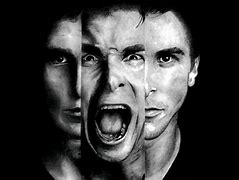

| 2 |
PSICOPATA MALEVOLO |
Un psicopata malevolo es aquel que, con tendencias sadicas y depravadas, tienden a adoptar actitudes hostiles y vengativas, con actos que tienen fines vengativos, malignos y destructivos para los demas. La mayoria de asesinos en serie encajan con este perfil, en concreto aquellos que, comprendiendo racionalmente que es la culpa, la etica y el remordimiento, no lo experimentan internamente. Buscan el castigo de aquellos que, a su criterio, lo merecen. |
|
| 3 |
PSICOPATA ASPERO |
Un psicopata aspero es aquel que tiende a mostrar su rechazo a los demas de manera indirecta y de forma principalmente pasiva. Se enredan siempre en disputas con las personas que los rodean y, tras el enfrentamiento, no muestran sentimientos de culpa ni de remordimiento. Encuentran placer al humillar a los demas y sus rasgos de personalidad incluyen generalmente el resultar amargados pero con ironia en sus argumentos. |
|
| 4 |
PSICOPATA EXPLOSIVO |
Un psicopata explosivo es aquel que muestra repentinas y subitas afloraciones de hostilidad, con actos que pueden ser extremos. La persona explota sin tiempo a que los demas reaccionen, con ataques de furia y momentos de una incontrolable colera hacia los demas que buscan que la victima termine siendo sumisa. Son personas excitables e irritables que entran en furia con facilidad. |

|